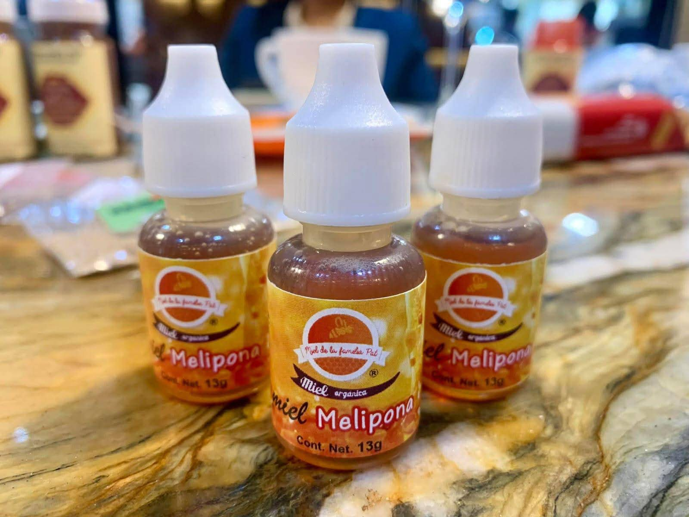
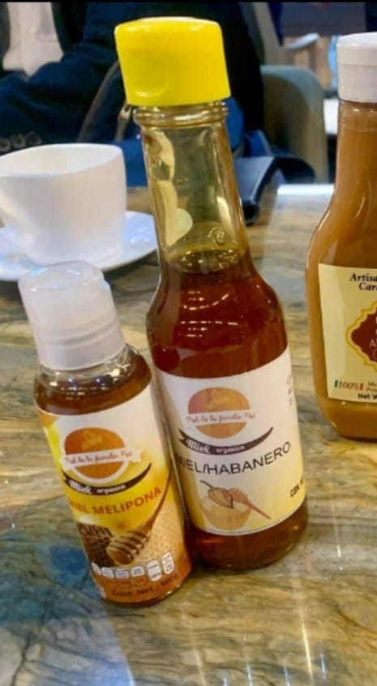
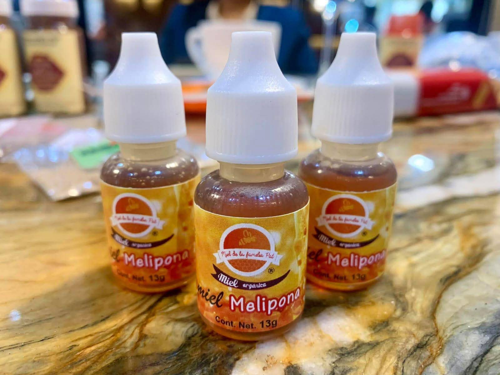
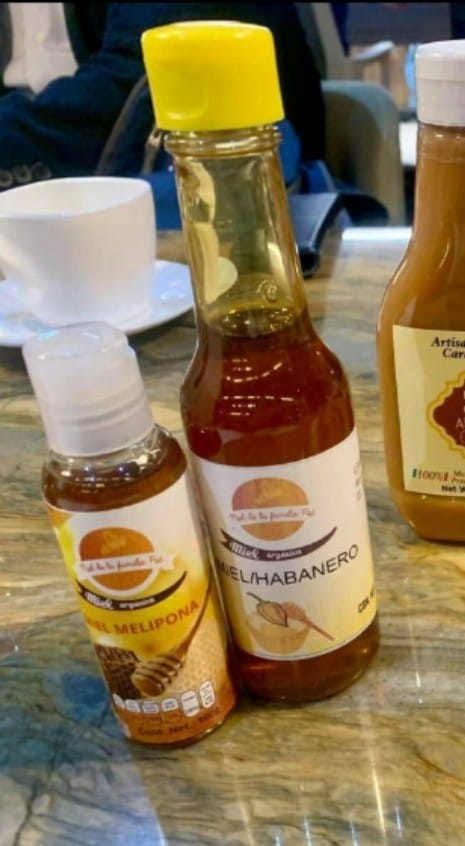

Mi empresa
Bienvenidos a un espacio dedicado a la esencia pura de la miel melipona y sus tesoros naturales. Aquí no solo rendimos homenaje a las abejas sagradas de la tradición maya, sino también a todos los productos que nacen de su inigualable labor: miel cruda, jabones artesanales, ungüentos curativos, cosméticos naturales y el polen dorado de la selva.
Cada artículo que ofrecemos está inspirado en el equilibrio entre la tierra y el ser humano, elaborado con respeto, cuidado y conciencia. Nos enorgullece compartir contigo el fruto de un proceso ancestral que combina sabiduría, ciencia natural y un profundo amor por lo auténtico. Este es un lugar para quienes buscan calidad, bienestar y conexión con la naturaleza a través de productos que sanan, nutren y transforman.
Casa De Abejas
Estas cajas son utilizadas para la apicultura donde las abejas(abejas sin aguijon) producen miel. Las colmenas estan organizadas en estanderias, y cada caja de madera sirve como ábitat por colonia de abejas.
Nuestros Productos
 


